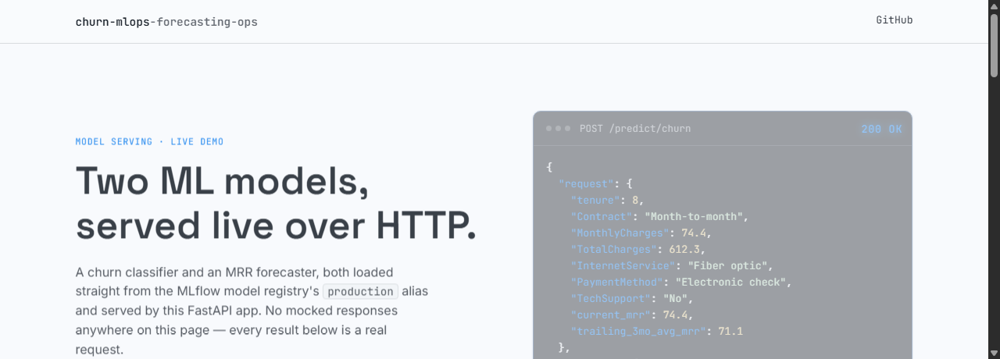

MLOps Pipeline — Churn Prediction & Revenue Forecasting
Python · Dagster · MLflow · LightGBM · FastAPI · Evidently · Docker
Built an end-to-end MLOps loop for a SaaS subscription business — Dagster orchestrates ingestion through training, MLflow tracks and promotes both the churn and forecast models by their evaluation metric, a FastAPI service serves live predictions, and an Evidently-monitored drift sensor triggers retraining automatically.
101 tests run standalone in CI — mocks and tmp_path only, no live dataset or trained model required — and the docker-compose stack was verified end-to-end, serving real predictions from the production-aliased churn model at 0.84 ROC-AUC.
The forecast model's RMSE (38.96) barely beats a naive baseline (39.06), and churn recall sits at 0.51 — it still misses roughly half of actual churners, so neither model is tuned for production-grade capture yet.
View on GitHub →